线性代数与奇偶校验的观点
奇偶校验与线性代数观点的等价
标准的(7， 4)汉明码的编码过程：
- 将 1 到 7 写成二进制的形式：1,10, … ,111。
- 所有$2^k，k ≥ 0$的位作为奇偶校验位$p^k$，其他的位作为数据位$d^k$。 因此，奇偶校验位为第 $1，2，4$ 位，数据位为第 $3，5，6，7$ 位。最终传输的比特串为：$𝑝_0𝑝_1𝑑_0𝑝_2𝑑_1𝑑_2𝑑_3$。
- 编码时，先将数据依次填入数据位，之后，对每个校验位$𝑑^𝑘$。
选择$𝑝^𝑘$的值，使他满足：所有位置满足第$𝑘 + 1$位（从最低有效位开始）为 1 的比特中，有偶数个是 1。
例如，对$p_0$，满足条件的比特位置（位置的最低有效位是 1）有：$1，3，5，7$。因此，若第三个位置($d_0$)，第五个位置($d_1$)，第七个位置($d_3$)共有 偶数个 1，置$p_0 = 0$，否则，置$p_0 = 1$。
用上述方法编码比特串与线性代数观点中r = dG的构造方法等价。
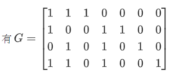设 $d=\begin{bmatrix}d_0&d_1&d_2&d_3\end{bmatrix}$
则 $dG=\begin{bmatrix}d_0+d_1+d_3&d_0+d_2+d_3&d_0&d_1+d_2+d_3&d_1&d_2&d_3\end{bmatrix}$
从奇偶校验位的角度去考虑：所有$2^k$，$k ≥ 0$的位作为奇偶校验位$p_k$，因此，奇偶校验位为第 1，2，4 位，最终传输的比特串为：$𝑝_0𝑝_1𝑑_0𝑝_2𝑑_1𝑑_2𝑑_3$。接下来可以得到：
| 校验位 | $p_0$ | $p_1$ | $p_2$ |
|---|---|---|---|
| 对应位置 | 1，3，5，7 | 2，3，6，7 | 4，5，6，7 |
| 值 | $d_0+d_1+d_3$ | $d_0+d_2+d_3$ | $d_1+d_2+d_3$ |
优化的奇偶校验与线性代数观点的等价
编码
(7， 4)汉明码的优化的编码过程：
- 将 1 到 7 写成等长的二进制的形式：001，010， … ，111。
- 所有$2^k，k ≥ 0$的位作为奇偶校验位$p^k$，其他的位作为数据位$d^k$。 因此，奇偶校验位为第 $1，2，4$ 位，数据位为第 $3，5，6，7$ 位。最终传输的比特串为：$𝑝_0𝑝_1𝑑_0𝑝_2𝑑_1𝑑_2𝑑_3$。将数据依次填入数据位，奇偶校验位都当作 0。
- 记录下所有值为 1 的比特的位置，对这些位置进行异或，得到一个异或结果：$𝑏_2𝑏_1𝑏_0$。置$𝑝_0 = 𝑏_0，𝑝_1 = 𝑏_1，𝑝_2 = 𝑏_2$。
例如，欲编码 0111，写出最终传输的比特串：p0p10p2111。 值为 1 的比特位置为：101，110，111，将他们异或得到 100，因此$p_0 = 0， p_1 = 0，p_2 = 1$。
传输的比特串为：0001111。
从直观上理解：奇偶校验本质上是数有多少个1：如果有奇数个1，则置奇偶校验位为1；若有偶数个1，则置奇偶校验位为0。而“数有多少个1”的这个过程实际上与异或运算是一致的——将奇数个1进行异或，将会得到一。因此，奇偶校验的方法可以被写作 $F^n_2$ 上的加法运算。下面的两种方式是等价的。
优化前的运算：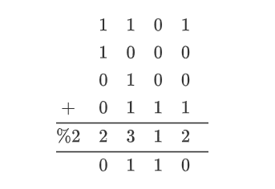
优化后的运算：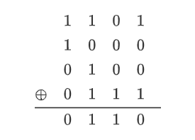
解码
(7， 4)汉明码的解码过程：
从奇偶校验的方式看，其进行校验的原理可以简要表示如下：每一个校验位的序号用二进制位表示时只含有一个1（刚好是 $2^k$ ），它就只校验那些序号相同位置也含有1的位。也就是说，这些位单独拎出来计数，必为偶。因此，一个奇偶校验位使得被校验的那一位达到了奇偶平衡。下面的图表示了一个(7, 4)线性码的校验位（**橙色**），和每个校验位对应的被校验的位（黄色）。
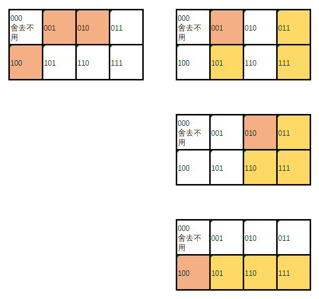因此，得到一个对应关系——一个奇偶校验位对应了某一位的错误。而现在，假设在011这一位引入一个随机错误（无论是把1变成0，还是把0变成1），它使得第二位和第三位的奇偶校验不平衡了，那么，在我们检查010和001这两个奇偶校验位时就会发现错误。此时，再将010和001相加，就得到了出错的那一位011。
然后，不从“位”，而是整体的角度去考虑：纠错的过程实际上就是把所有为值1的位的索引值相加。如果某一位奇偶校验位是1，那么它代表的这个1位就参与了一次运算，使得这一位达到平衡，而如果哪一位出错，这一位的索引值就不能被平衡，加出来的和就会是这一位的索引值。
这个过程与使用校验矩阵纠错的原理是完全一致的！！考虑使用校验矩阵：
$$
H=\begin{bmatrix}
1&0&1&0&1&0&1\
0&1&1&0&0&1&1\
0&0&0&1&1&1&1\
\end{bmatrix}
$$
若第七位有一个随机错误，则多异或了一个011，结果就不是000而是011了。它完全等价于第二位和第三位未达到平衡而得出011。
对比
若要在一台资源（存储、运算）非常紧张的嵌入式设备实现(255，247)汉明码，奇偶校验 vs 矩阵乘法？
奇偶校验
使用奇偶校验位的观点来看，校验矩阵被隐藏了，取而代之的是默认的“位的索引”，例如第二位的索引值就为2。这个值是不可更改的，因此如果转换成校验矩阵，那这个矩阵就是唯一的（不像前一种观点看来，这个矩阵是可以自己随意构造的）。
- 从时间上考虑，只需要执行小于等于 $255$ 次的异或运算，速度较快。
- 从空间上考虑，不用存储至少 $255\times 255$ 的矩阵，占用内存少。
矩阵乘法
对于(255, 247)汉明码而言：
- 校验矩阵： $H^{8\times 255}$ ，则译码 $Hv^T$ 需要的存储空间至少为矩阵的大小 $8\times 255$ ，且进行一次译码需要 $8\times 255$ 次乘法运算与加法运算。
- 生成矩阵： $G^{247\times 255}$ ，则编码 $Gu^T$ 需要的存储空间至少为矩阵的大小 $247\times 255$ ，且进行一次译码需要 $247\times 255$ 次乘法运算与加法运算。
总的说来，在存储与运算资源都非常紧张的嵌入式设备中，使用矩阵乘法实现(255，247)汉明码，会需要较大的存储空间（至少 $255\times 255$ ），且无论进行解码还是编码，运算的时间都较长。前者可能导致计算的内存不足，后者可能导致计算速度太慢，不能与输入的速度相匹配，导致解码不完整，丢失数据。
(15，11)汉明码
两个矩阵的推导过程
汉明码 $(n=2^k-1, n-k=2^k-1-k, d)$ ，将 $k=4$ 带入其中，可以得到 $(15,11,d)$ 汉明码。(15，11)汉明码的校验矩阵为：
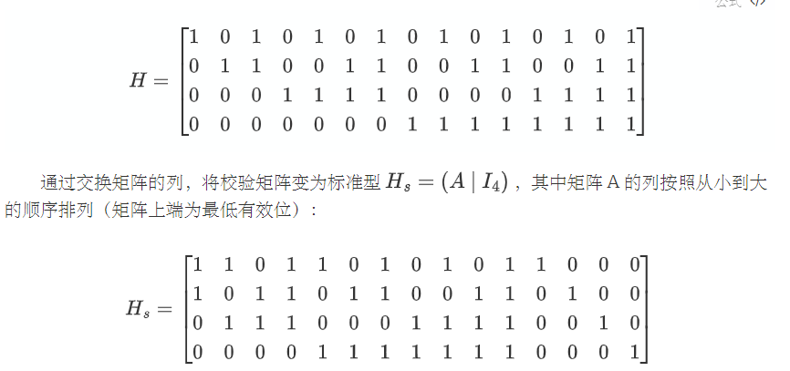
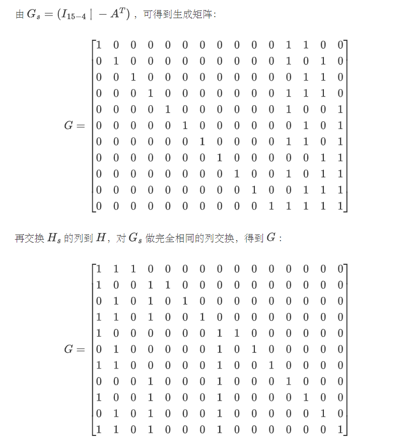
接下来实现汉明码的编码和验证，各为三个模块：
- 编码
- 对欲传输的11位比特序列进行编码
- 对编码后的15位比特序列进行解码
- 验证
- 对同样的原始数据，编码结果相同
- 对同样的编码，解码结果相同
- 引入随机错误后可恢复
编码解码——线性代数观点
import numpy as np
def encode(word):
word = list(map(int, list(word)))
code = word * G % 2
code = code.tolist()[0]
code = ''.join([str(e) for e in code])
return code
def decode(code):
code = np.matrix(list(map(int, list(code))))
error = (np.matrix([1, 2, 4, 8]) * (H * code.T % 2)).sum()
code = code.tolist()[0]
if not error == 0:
code[error - 1] = (code[error - 1] + 1) % 2
code = code[2: 3] + code[4: 7] + code[8:]
return ''.join([str(e) for e in code])
编码解码——奇偶校验观点
def encode(word):
word = list(map(int, list(word)))
code = [0, 0, word[0], 0, word[1], word[2], word[3], 0] + word[4:]
tmp = 0
for i, e in enumerate(code):
if e == 1:
tmp ^= (i + 1)
code[0] = tmp & 1
code[1] = (tmp >> 1) & 1
code[3] = (tmp >> 2) & 1
code[7] = (tmp >> 3) & 1
return ''.join(str(e) for e in code)
def decode(code):
code = list(map(int, list(code)))
tmp = reduce(operator.xor, [(i + 1) for i, bit in enumerate(code) if bit])
# 单个错误纠正
if tmp != 0:
code[tmp - 1] = (code[tmp - 1] + 1) % 2
# 去除纠错码，恢复
word = code[2: 3] + code[4: 7] + code[8:]
return ''.join(str(e) for e in word)
编解码正确性验证
对于编码和解码的验证如下：通过上述编解码打印出文件 decode.txt 和 encode.txt ，再进入cmd进行比较，未发现编解码出差错。
with open("encode.txt", "w") as fw1:
with open("decode.txt", "w") as fw2:
with open("hamming_15_11.txt", "r") as fp:
for i in range(1 << 11):
t = fp.readline()
a, b = t[0: 11], t[13: 28]
ans_en = encode(a)
ans_de = decode(b)
fw1.write(a + ", " + ans_en + "\n")
fw2.write(ans_de + ", " + b + "\n")
差错解码验证
对于引入了错误的编码的解码，通过以下函数进行验证：
def check_one_error():
# 生成随机11位序列（随机数转换成列表）
# cmp1是原始数据（字符串型），result是对应的编码（list型）
a = list(map(int, list(bin(randint(0, 1 << 11))[2:].zfill(11))))
cmp1 = "".join([str(e) for e in a])
result = list(map(int, encode("".join([str(e) for e in a]))))
# 对于15位，遍历引入错误
for i in range(15):
result[i] = (result[i] + 1) % 2
# 解码带错误的编码。若不等，则直接退出
cmp = decode("".join([str(e) for e in result]))
if cmp != cmp1:
return False
result[i] = (result[i] + 1) % 2
return True
可视化
从标准输入读入只包含 0 和 1 的字符串，每读满 11 个字符，便将其编码，向标准输出写 15 个只包含 0 和 1 的编码字符串。持续进行，直到没有数据读入。测试程序保证你读入的字符串长度是 11 的倍数。
对于C1：原始图片和解码后的图片相同，因为噪声信道每15比特中有一个比特出错，而Hamming码可以纠一个比特的错误。
对于C2：原始图片和解码后的图片不相同，因为噪声信道对每30比特的后15比特有2个比特出错，而汉明码只能纠 一个比特的错误。但是通过对比图片可以发现，图片每两行就有一行相同。这是因为条件给出：每 30 个比特中，前 15 个比特有 1 个比特出错，满足Hamming码的纠错条件，可以纠正。
对于C3：原始图片和解码后的图片不相同，因为噪声信道对每45比特中前15比特有连续的3比特出错。但是通过对比图片可以发现，图片每三行就有两行相同。
| 题 | 原始图片 | 编解码后 |
|---|---|---|
| C1 | ||
| C2 | 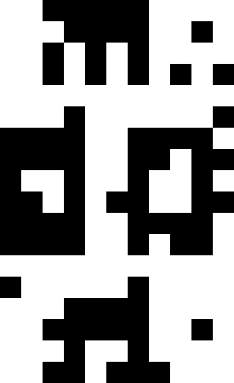 | |
| C3 | 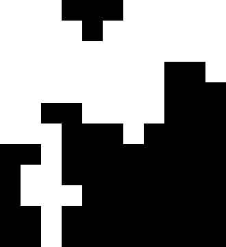 | 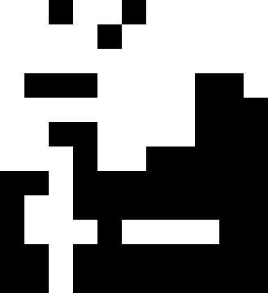 |
2 比特错误检测
(7,4)汉明码能正确纠正一个错误，检出两个错误（认为错误的数量不会超过 2）。由 (7,4) 扩展汉明码编码方法，有 $p=p_0+p_1+d_0+p_2+d_1+d_2+d_3$ ：当仅仅考虑小于等于两位错误时：
- $p+p_0+p_1+d_0+p_2+d_1+d_2+d_3=1$ ：则其中一位出现错误。观察汉明码部分，若有错，则直接可以纠错。若无错，则为总校验位出错，纠正即可。
- $p+p_0+p_1+d_0+p_2+d_1+d_2+d_3=0$ ： 则可能没有错误或者两位出错。观察汉明码部分，若未出现错误，则没有错误。若检出错误，则两位出错，但是因为不知道具体出错位置， 无法纠错。
对每16个bit，随机产生错误。当检测出错误时，若只有一个错，则纠正，否则输出无法纠错。
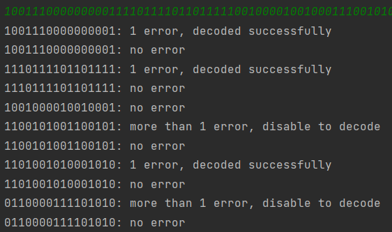突发错误
信道的特性并非一成不变的，很多信道的噪声是突发性的。
具体来说，在大部分时候，信道都能当作可靠信道，不会发生翻转；但是，在少数时候，信道会受干扰，造成连续几个比特错误的发生。
尽管平均来看，突发错误信道的错误概率并没有更高，但因为信道的特点，汉明码无法直接用于突发错误信道。为了解决这个问题，一种方法是换用支持检查、纠正突发错误的编码（如Reed–Solomon 编码，这种编码大量用于 CD 的纠错）；另一种方法是通过比特交织的技术。具体来说，我们将多个比特分组混杂起来发送，在接收端将比特分组恢复，使用这种策略，我们将突发错误分散到了多个比特分组，一个例子如图：
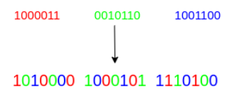
任何一个连续三比特的突发错误都会被分摊到三个分组处理，因而可以纠错连续三比特的突发错误。
实现
我将主函数的内容改成了下面的样子：上方为解码时的内容，下方为编码时的内容。由于错误输入时是连续三个一起出现的突发式错误，因此采取这种比特交织的方法可以有效防范。
while True:
x = sys.stdin.read(45)
if len(x) < 45:
break
a = x[0]+x[3]+x[6]+x[9]+x[12]+x[15]+x[18]+x[21]+x[24]+x[27]+x[30]+x[33]+x[36]+x[39]+x[42]
b = x[1]+x[4]+x[7]+x[10]+x[13]+x[16]+x[19]+x[22]+x[25]+x[28]+x[31]+x[34]+x[37]+x[40]+x[43]
c = x[2]+x[5]+x[8]+x[11]+x[14]+x[17]+x[20]+x[23]+x[26]+x[29]+x[32]+x[35]+x[38]+x[41]+x[44]
sys.stdout.write(decode(a))
sys.stdout.write(decode(b))
sys.stdout.write(decode(c))
sys.stdout.flush()
while True:
x = sys.stdin.read(33)
a = encode(x[0:11])
b = encode(x[11:22])
c = encode(x[22:33])
tmp = a[0]+b[0]+c[0]+a[1]+b[1]+c[1]+a[2]+b[2]+c[2]+a[3]+b[3]+c[3]+a[4]+b[4]+c[4]\
+a[5]+b[5]+c[5]+a[6]+b[6]+c[6]+a[7]+b[7]+c[7]+a[8]+b[8]+c[8]+a[9]+b[9]+c[9]\
+a[10]+b[10]+c[10]+a[11]+b[11]+c[11]+a[12]+b[12]+c[12]+a[13]+b[13]+c[13]+a[14]+b[14]+c[14]
sys.stdout.write(tmp)
sys.stdout.flush()